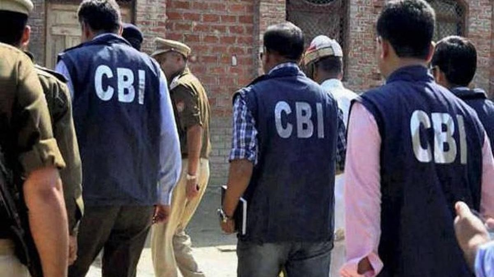

New Delhi | June 10, 2026

New Delhi, June 10: In a significant anti-corruption operation, the Central Bureau of Investigation (CBI) has arrested a Delhi Police inspector in connection with an alleged ₹3 crore bribery case. The agency is also investigating the possible involvement of an official from the Directorate General of Civil Aviation (DGCA), expanding the scope of the high-profile probe.
According to officials, the case involves allegations of a large-scale bribery arrangement linked to official influence and favours. Following a preliminary inquiry, the CBI registered a case and carried out searches at multiple locations, leading to the arrest of the police officer.
Investigators are examining financial records, digital evidence, and communication trails to determine how the alleged bribe was arranged and whether additional officials were involved. Sources familiar with the investigation said the role of a DGCA official has come under scrutiny, though no arrest has been made in connection with that aspect of the case so far.
The development has drawn attention due to the alleged involvement of individuals associated with both law enforcement and the country's aviation regulator. Officials said the investigation remains ongoing and further action could follow as evidence is reviewed.
The accused inspector will be produced before a competent court, while the CBI continues to probe the wider network behind the alleged ₹3 crore corruption case.
← Back to Home